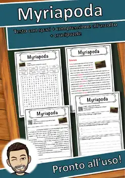
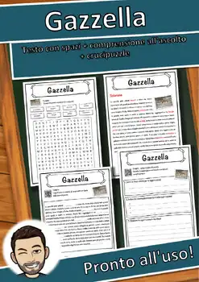
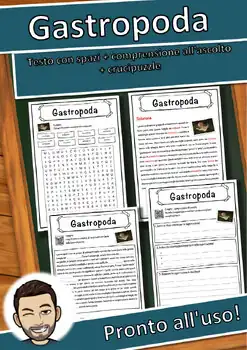

9th Grade Animals & Nature Worksheets
222 Animals & Nature resources for 9th Grade, ready to print: Pongo, Plantae, Pinnipedia, Picidae and more. Each resource page shows the grade range, page count and a preview and links straight to the product on TpT.
222 resources

Gli animali – Italian Reading Comprehension BUNDLE | Animal Schede

Les animaux – French Reading Comprehension BUNDLE | Animal Fiches

Pongo – Italian Reading Comprehension Worksheet (Scheda): Cloze & Listening

Plantae – Italian Reading Comprehension Worksheet (Scheda): Cloze & Listening

Pinnipedia – Italian Reading Comprehension Worksheet (Scheda): Cloze & Listening

Picidae – Italian Reading Comprehension Worksheet (Scheda): Cloze & Listening

Picea – Italian Reading Comprehension Worksheet (Scheda): Cloze & Listening

Pesce – Italian Reading Comprehension Worksheet (Scheda): Cloze & Listening

Pergamena – Italian Reading Comprehension Worksheet (Scheda): Cloze & Listening

Pelliccia – Italian Reading Comprehension Worksheet (Scheda): Cloze & Listening
Naturismo – Italian Reading Comprehension Worksheet (Scheda): Cloze & Listening

Myriapoda – Italian Reading Comprehension Worksheet (Scheda): Cloze & Listening
Mustelidae – Italian Reading Comprehension Worksheet (Scheda): Cloze & Listening
Mulino – Italian Reading Comprehension Worksheet (Scheda): Cloze & Listening

Mollusca – Italian Reading Comprehension Worksheet (Scheda): Cloze & Listening

Minerale – Italian Reading Comprehension Worksheet (Scheda): Cloze & Listening

Medusa – Italian Reading Comprehension Worksheet (Scheda): Cloze & Listening

Marmota – Italian Reading Comprehension Worksheet (Scheda): Cloze & Listening

Lynx – Italian Reading Comprehension Worksheet (Scheda): Cloze & Listening

Giraffa – Italian Reading Comprehension Worksheet (Scheda): Cloze & Listening

Giocattolo – Italian Reading Comprehension Worksheet (Scheda): Cloze & Listening

Evoluzione – Italian Reading Comprehension Worksheet (Scheda): Cloze & Listening

Domatore – Italian Reading Comprehension Worksheet (Scheda): Cloze & Listening

Betula – Italian Reading Comprehension Worksheet (Scheda): Cloze & Listening

Bubo bubo – Italian Reading Comprehension Worksheet (Scheda): Cloze & Listening

Genere – Italian Reading Comprehension Worksheet (Scheda): Cloze & Listening

Gekkonidae – Italian Reading Comprehension Worksheet (Scheda): Cloze & Listening

Gazzella – Italian Reading Comprehension Worksheet (Scheda): Cloze & Listening

Gastropoda – Italian Reading Comprehension Worksheet (Scheda): Cloze & Listening

Paridae – Italian Reading Comprehension Worksheet (Scheda): Cloze & Listening

Pan – Italian Reading Comprehension Worksheet (Scheda): Cloze & Listening

Palchi – Italian Reading Comprehension Worksheet (Scheda): Cloze & Listening

Ovis – Italian Reading Comprehension Worksheet (Scheda): Cloze & Listening

Osso – Italian Reading Comprehension Worksheet (Scheda): Cloze & Listening

Oscines – Italian Reading Comprehension Worksheet (Scheda): Cloze & Listening

Orecchio – Italian Reading Comprehension Worksheet (Scheda): Cloze & Listening

Odonata – Italian Reading Comprehension Worksheet (Scheda): Cloze & Listening

Oca – Italian Reading Comprehension Worksheet (Scheda): Cloze & Listening

Nutrizione – Italian Reading Comprehension Worksheet (Scheda): Cloze & Listening

Nido – Italian Reading Comprehension Worksheet (Scheda): Cloze & Listening

Natura – Italian Reading Comprehension Worksheet (Scheda): Cloze & Listening

Linguaggio – Italian Reading Comprehension Worksheet (Scheda): Cloze & Listening

Leporidae – Italian Reading Comprehension Worksheet (Scheda): Cloze & Listening

Latte – Italian Reading: Cloze Text, Listening Task & Word Search (Scheda)

Larva – Italian Reading: Cloze Text, Listening Task & Word Search (Scheda)

Larix – Italian Reading: Cloze Text, Listening Task & Word Search (Scheda)

Larinae – Italian Reading: Cloze Text, Listening Task & Word Search (Scheda)

Lampyridae – Italian Reading: Cloze Text, Listening Task & Word Search (Scheda)
No resources found – try a different search term or filter.